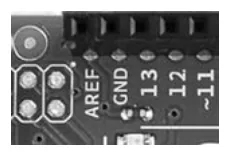
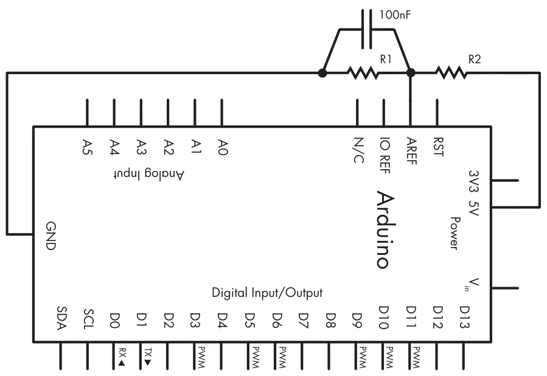

Reference Voltage
As demonstrated in Project 6, the analogRead() function returns a value proportional to a voltage between 0 and 5 V. The upper value (5 V) is the reference voltage, the maximum voltage that the Arduino analog inputs will accept and return the highest value for (1,023).
To increase precision while reading even lower voltages, we can use a lower reference voltage. For example, when the reference voltage is 5 V, analogRead() represents this with a value from 0 to 1,023. However, if we need to measure only a voltage with a maximum of (for example) 2 V, then we can alter the Arduino output to represent 2 V using the 0–1,023 value range to allow for more precise measurement. You can do this with either an external or internal reference voltage, as discussed next.
Using an External Reference Voltage

The first method of using a reference voltage is with the AREF (analog reference) pin, as shown in Figure 4-32.
We can introduce a new reference voltage by connecting the voltage into the AREF pin and the matching GND to the Arduino’s GND. Note that this can lower the reference voltage but will not raise it, because the reference voltage connected to an Arduino Uno must not exceed 5 V. A simple way to set a lower reference voltage is by creating a voltage divider with two resistors, as shown in Figure 4-33.

The values of R1 and R2 will determine the reference voltage according to the following formula:
R2 V=V R1+R3 outin
Vout is the reference voltage, and Vin is the input voltage—in this case 5 V. R1 and R2 are the resistor values in ohms.
The simplest way to divide the voltage is to split Vin in half by setting R1 and R2 to the same value—for example, 10 kΩ each. When you’re doing this, it’s best to use the lowest-tolerance resistors you can find, such as 1 percent; confirm their true resistance values with a multimeter, and use those confirmed values in the calculation. Furthermore, it’s also a very good idea to place a 100 nF capacitor between AREF and GND to avoid a noisy AREF and prevent unstable analog readings.
When using an external reference voltage, insert the following line in the void setup() section of your sketch:
analogReference(EXTERNAL); // select AREF pin for reference voltageUsing the Internal Reference Voltage
The Arduino Uno also has an internal 1.1 V reference voltage. If this meets your needs, no hardware changes are required. Just add this line to void setup():
analogReference(INTERNAL); // select internal 1.1 V reference voltage